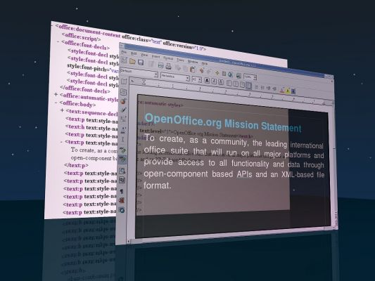

|
|
|
|

OpenOffice.org is becoming more and moer widely used. The community continues to gain strength and grow but we recognize that we do not have a wealth of templates and clipart under our own banner. Even the external sites that provide these are not expanding their collections; so here's the challenge. Create and submit templates and clipart as part of the competition and be eligible for a share of cash awards of over US$5000 provided by our sponsor, worldart.com, and other awards.
The OpenOffice.org documentation project is running this competition in conjunction with WorldArt, which, we hope, is the start of a series of competitions. OpenOffice.org lives as open SOURCE Community of the interest and commitment of its users and project members. Each user of OpenOffice.org is called to provide own templates or clipart and send these in. These will become publicly available from http://documentation.openoffice.org/Samples_Templates/
Submissions must be date stamped before 23h59 on 3 October 2006 to the email address above as attachments. Depending on the number of submissions, notification of the winners, is expected to be completed by 31 October 2006 or sooner.
Everyone can participate and may submit as many submissions (one per message) as they can without penalty.
All templates submitted must be presented in open OpenOffice.org template format (e.g. * ott * for Writer templates). Clipart may be in any graphic format, including Draw.
Templates should have an appropriate, generally accepted utilization value and not be "banal". The submitted templates should useful to other users. For example, an empty Writer file with inserted, current date is surely no "meaningful" template. However, a Calc spreadsheet template that can be used for cataloguing a stamp collection or other collection will surely qualify.
Some Ideas for Templates:
Business cards, letterheads, cards, Memos and faxes, invoices accounting templates, newsletters, resumes, expense reports, base forms, presentation template, cd cover, spreadsheet templates, calenders..... for Writer, Calc, Base... Use text fields for folks to personalize, have areas for businesses to insert logos, create all types of useful templates for all types of home and business uses for our community to share.
Some Ideas for Clipart:
Borders, frames, decorative objects, business objects, animals, flowers, backgrounds, OO Doodads.... let your creative juices flow.
Our
sponsor, Worldlabel, has committed US$5000 to expand the number of
templates in the OpenOffice.org document project repertoire. To have
a share of this pool, your template or collection of clipart should
be a significant contribution. A panel of three judges will evaluate
and select the finalists and, with the co-operation of the sponsor,
allocate prizes in proportion.